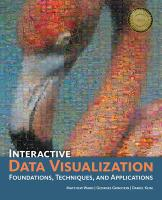

Matthew Ward
A K Peters Ltd
ISBN: 978-1568814735
$74 hardcover
Ben Fry
Oreilly
ISBN: 978-0-596-51455-6
$18 on Kindle, and online at safaribooksonline.com
Electronic
Visualization Laboratory (EVL)
2032 Engineering Research Facility (ERF)
EVL phone (312) 996-3002 |
email: aej at evl.uic.edu |
33484(u) /
33485(g) Lecture - Tuesday and Thursday from 12:30 to 1:45pm in
2068 ERF
office
hours: Tuesday and Thursday from 11:15 to 12:30 in 2032 ERF and
by appointment
TA: Arthur
Nishimoto - anishi2 at uic edu
office hours: T / Th 1:45 to 3:00 and by appointment
|  |
|
| Interactive
Data
Visualization - Foundations, Techniques, and Applications
Matthew Ward A K Peters Ltd |
Visualizing
Data:
Exploring and Explaining Data with the Processing
Environment Ben Fry Oreilly ISBN: 978-0-596-51455-6 $18 on Kindle, and online at safaribooksonline.com |
| Week |
Projects |
Topic |
| 1 - 8/28
8/30 |
Intro to
Visualization |
|
| 2 - 9/04
9/06 |
1 out |
Intro to
Programming in Processing |
| 3 - 9/11
9/13 |
The Basics | |
| 4 - 9/18
9/20 |
Information Visualization | |
| 5 - 9/25
9/27 |
1 due, 2 out | P1 Presentations |
| 6 - 10/02
10/04 |
P1 Presentations | |
| 7 - 10/09
10/11 |
(meet in
2036 ERF) Geo-spatial Visualization |
|
| 8 - 10/16
10/18 |
2 due, 3 out | Privacy & P2 Presentations |
| 9 - 10/23
10/25 |
|
Social Network Visualization & Common Data Transforms |
| 10 - 10/30 11/01 |
Medical Viz & Scientific Visualization | |
| 11 - 11/06 11/08 |
3 due, 4 out | P3 Presentations & Visualizing Uncertainty |
| 12 - 11/13 11/15 |
Dynamic Data & Animation | |
| 13 - 11/20 |
talk
topic due |
Visual
Analytics |
| 14 - 11/27
11/29 |
4 due | Visual
Analytics & P4 presentations |
| 15 - 12/04 12/06 |
Viewers Choice
Presentations |
""We have so much time and so little to do! No! Wait! Strike that! Reverse it!" -- Willy Wonka
You should have passed CS
201 and have a solid grasp of programming and basic data
structures to be able to implement the visualization projects in
the course.
Standard departmental disclaimer: If you do not have the prerequisites for this course make sure that you drop this course right away. The department will verify the prerequisites for all students registered in this course during the first few weeks of the term and if you do not have the prerequisites, you will be notified and dropped from the course after the normal drop/add period. By that time, you will not be able to enroll in any new course.
This course is going to
focus on the basics of visualization, specifics of scientific
visualization, information visualization, medical visualization
and the effective use of interactive visualization for
analytical reasoning.
Attendance is very
important, but not mandatory. Part of your grade will be based
on your in-class participation (i.e. asking good questions,
making good comments) so please take that into account.
If you
want wireless access in the classroom please fill out the
survey form at http://tinyurl.com/9r6e72o
There is a piazza page for
the course at piazza.com/uic/fall2012/cs424
I will occasionally send out
emails to the class using your uic email address so please make
sure that you are checking that account regularly.
I will be putting all of my notes on the web, however these notes should not be considered 'official' until the day of class. If I make any major changes to a page afterwards, then I will announce it in class but note that at the bottom of each page is a modification date so you should be able to tell when the notes were last modified. I try to ensure that the notes on the web accurately reflect the lecture, but its what is discussed in class 'that counts', not what's written in the notes.
"Those who are absent are always wrong." - African proverb
"I hear and I forget. I see and I remember. I do
and I understand" - Chinese proverb
The final grade will be calculated as follows:
Projects 1-4: 800 points |
A: 870 - 1000 points |
last revision 11/8/12 - corrected Thanksgiving
week
last revision
9/21/12 - moved project 2 due date from
15th to 17th
last
revision 9/08/12 - shifted schedule around to add another
Project 1 presentation day
last revision 9/05/12 - updated the evl
wireless link